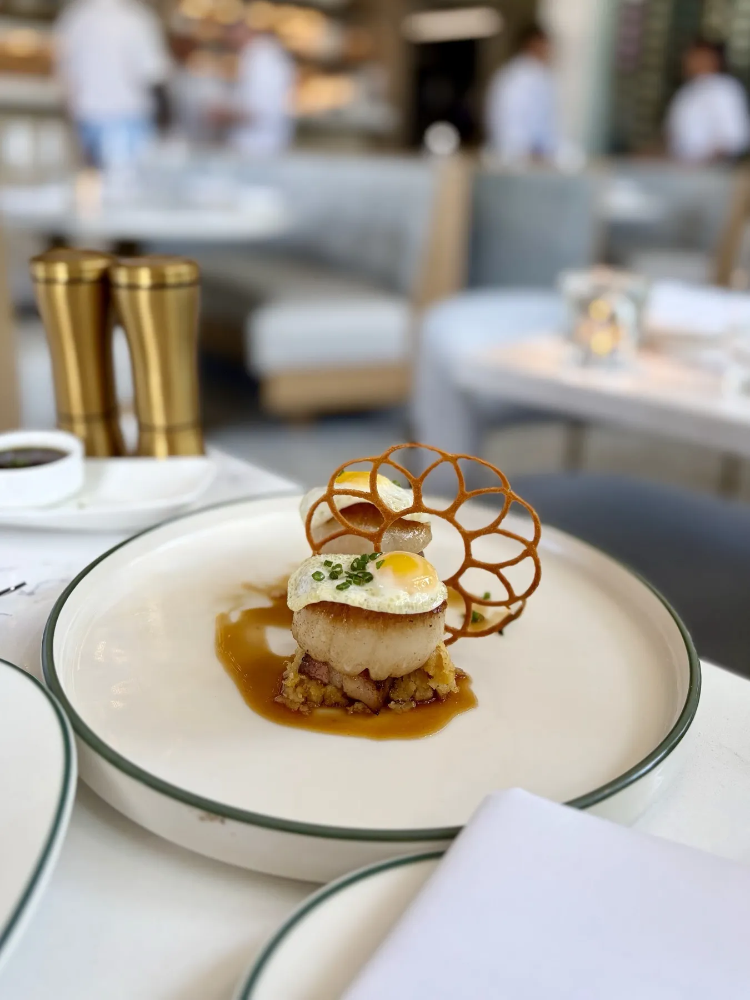
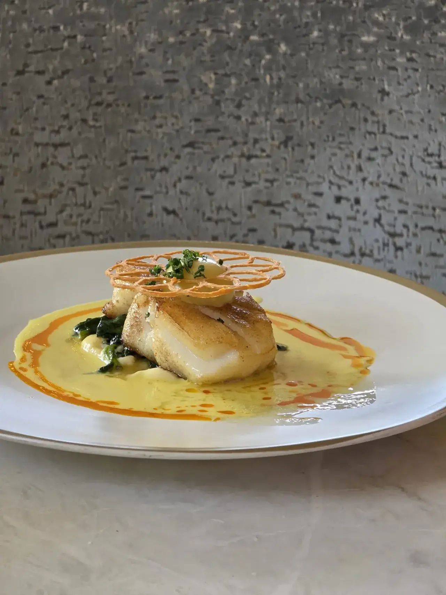

Milk bread
Pull-apart milk bread with sea salt butter, hot honey, lavender and pistachio brittle. Reviewers call it a must.

New American · SoHo, Tampa

Milk bread, caviar service and grouper with a corn cake, in a bright dining room on South Howard Avenue.
HoursMon · Closed717 S Howard Ave, Tampa, FL 33606
Dinner on South Howard
Start with the bread, then the caviar, then something green.
Pull-apart milk bread with sea salt butter, hot honey, lavender and pistachio brittle. Reviewers call it a must.

Beet and goat cheese with beet foam and truffle honey, plus Landon's chop and a Calabria Caesar.

Guests come for the 10k scallops, the hamachi crudo and grouper with a corn cake and shrimp.


4.7 ★ · 202 Google reviews
If you’re looking for a truly exceptional dining experience in Tampa, The Landon is the establishment you seek. From the moment you walk in, you’re greeted by the most friendly hosts, who make you feel like you’re an old friend they haven’t seen in a while and so happy you dropped by. The service was impeccable. I don’t think our water glasses were ever less than half full the entire meal.
One of the best dining experiences we've had! The hospitality is outstanding! We drove from Jupiter, FL just to try this place and couldn't be happier we did. From the moment we arrived, everyone was welcoming, warm, and kind. There was even a handwritten note waiting at our table thanking us for dining with them.
Went for a special birthday dinner, lovely restaurant! Amazing service, everything was cooked to perfection and beautifully plated. I see why folks recommend the 10k scallops, they were so yummy! The hamachi crudo is also a must. The little purple things are fried rice paper, such a cute touch. Milk bread at Mai's was better, but this is alao delicious in a different way.
Hecho aquí
The Landon is a New American restaurant at 717 S Howard Ave in Tampa, with the tagline Elevated American Cuisine on its sign. Its dinner menu opens with pull-apart milk bread, a caviar service and composed salads.
Michael Stewart is the owner, Kal Harris the general manager and Robert Hesse the executive chef. Reviewers mention Kal visiting every table and Brandon and Katie taking care of theirs.
The dining room is light and crisp, with brass chandeliers, velvet banquettes and marble tables. Valet is offered, and there is street parking nearby.

Ven por una
717 S Howard Ave, Tampa, FL 33606
Valet is available, with street parking nearby. Closed Mondays.